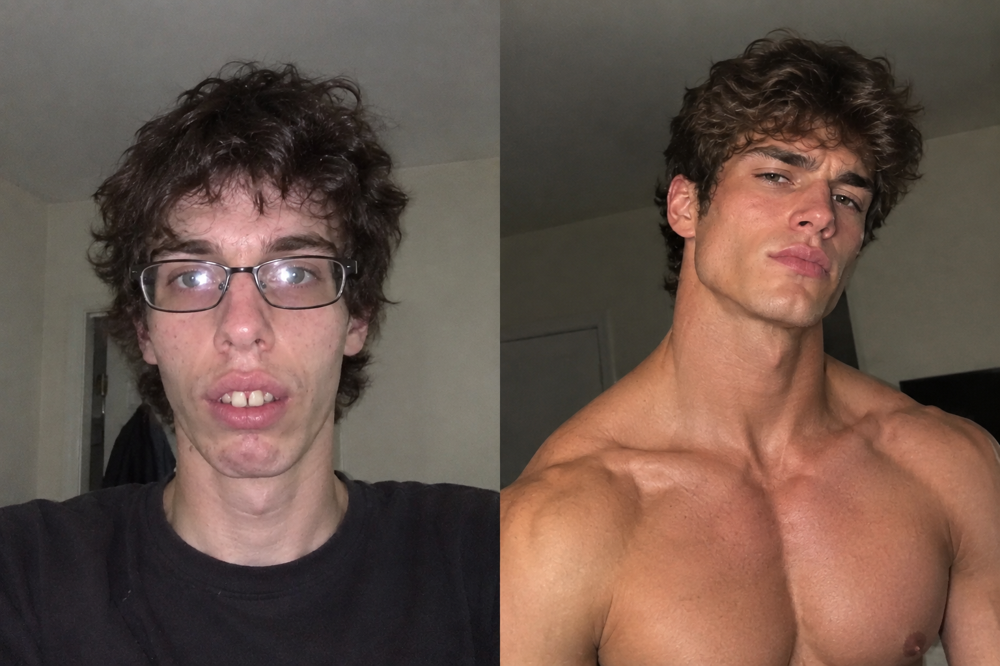

El juez que moggeo a Clavicular
Momento que será recordado para siempre en la historia del mogverso
¿Quién es Clavicular?
Clavicular es el nombre con el que se conoce en internet a Braden Peters, un streamer e influencer estadounidense. Se hizo conocido principalmente por su contenido relacionado con el looksmaxxing, una tendencia de internet centrada en mejorar la apariencia física. Tiene presencia en plataformas de streaming como Kick y en redes sociales.

¿Qué es moggear?

Moggear es un término que viene de la palabra inglesa mogging y que se utiliza principalmente en internet y en redes sociales. Se refiere a una situación en la que una persona destaca claramente sobre otra al compararlas, especialmente por aspectos como el físico, la altura, la cara, la mandíbula, el estilo o la apariencia general.
Momento del moggeo
Clavicular tuvo que acudir al tribunal después de un incidente ocurrido el 26 de marzo de 2026 en los Everglades, donde apareció en un vídeo disparando varias veces contra un caimán que, según las informaciones posteriores, ya estaba muerto. Las autoridades lo acusaron de disparar ilegalmente un arma en un lugar público.
El 15 de mayo de 2026, Clavicular se declaró no contest y recibió seis meses de libertad condicional, además de servicio comunitario y cursos de seguridad. Durante esa comparecencia judicial, Clavicular apareció frente al juez Marcus Bach Armas.
Las imágenes de la audiencia comenzaron a circular por redes sociales y muchos usuarios se fijaron en la diferencia de apariencia entre ambos. Como Clavicular es conocido precisamente por el looksmaxxing, una tendencia relacionada con mejorar la apariencia física, los usuarios empezaron a bromear diciendo que el propio juez había "moggeado" a Clavicular.